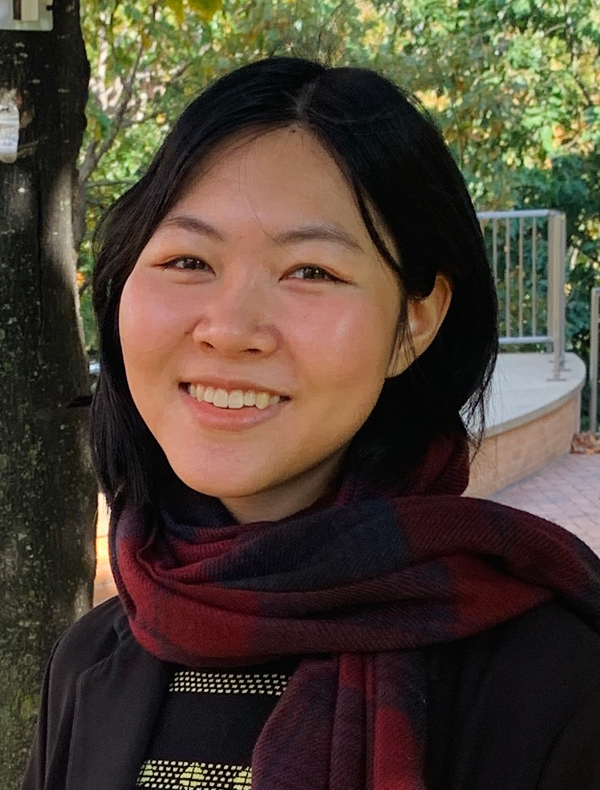
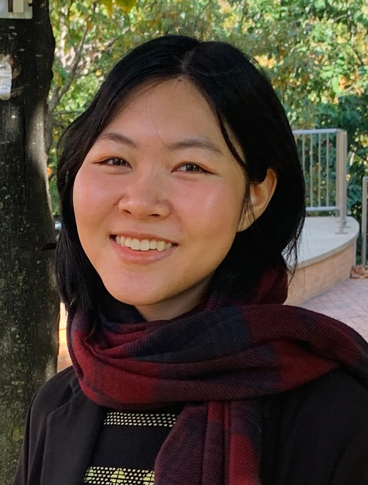
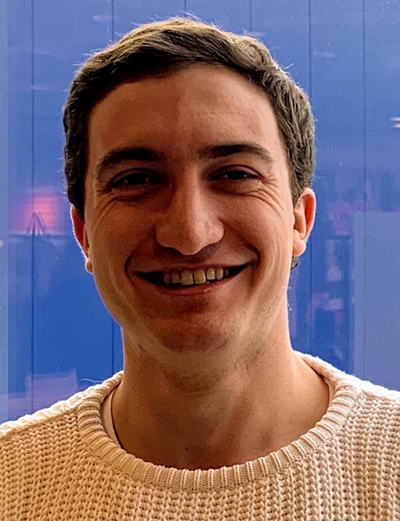
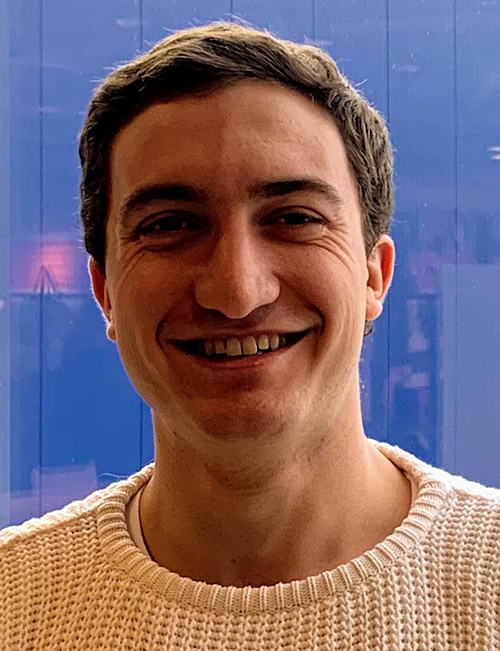
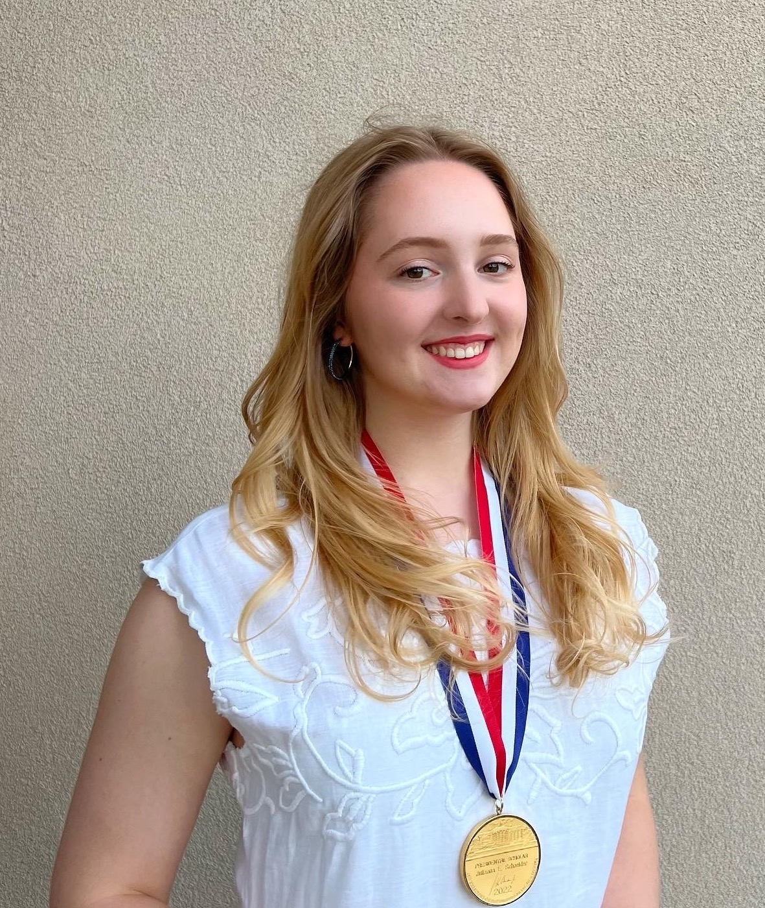
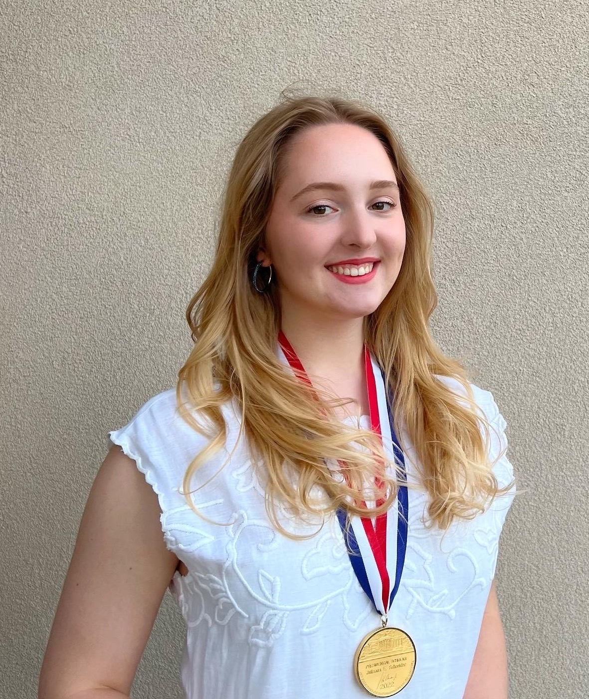

Stefanie Mueller
TIBCO Career Development Associate ProfessorMIT Electrical Engineering and Computer Science, joint with Mechanical Engineering MIT Computer Science and Artificial Intelligence Laboratory Head of the HCI Engineering Group Email: stefanie.mueller@mit.edu [Curriculum Vitae]
Publications
DOI PDF Project Page

DOI PDF Video Talk Slides Project Page

DOI PDF Video Talk Slides Project Page

DOI PDF Video Talk Project Page

DOI PDF Video Talk Slides Project Page

DOI PDF Video Talk Project Page
DOI PDF Video Talk Project Page

DOI PDF Video Talk Slides Project Page

DOI PDF Video Press video Talk Slides Project Page

DOI PDF Video Talk Slides Project Page

DOI PDF Video Talk Slides Project Page

DOI PDF Video Talk Slides Project Page

in the Context of Form. In Proceedings of CHI 2020. DOI PDF Video Slides Project Page

with Sensors and Displays. In Proceedings of CHI 2020. DOI PDF Video Talk Slides Project Page


Microsoft Research Faculty Fellowship 2020 Alfred P. Sloan Research Fellowship 2020 Best Paper Award, ACM UIST 2019 NSF CAREER Award 2019 MIT EECS Outstanding Educator 2018 ACM Doctoral Dissertation Award Honorable Mention 2018 ACM SIGCHI Best Dissertation Award 2018 GI Dissertation Award 2018 Forbes 30 under 30 in Science, 2017 Best Paper Nominee, ACM CHI 2015 Best Paper Nominee, ACM CHI 2014 Best Paper Award, ACM CHI 2013 Invited Talks
2019
07/23/19 Google Research Cambridge, host: Michael Terry
2018
06/11/17 Stanford David H. Liu Memorial Lecture Series
20/06/18 Hewlett Packard, host: Tico Ballagas
2017
30/05/17 Northwestern University, host: Jake Pollock
15/07/17 RSS 2017 Women in Robotics Workshop
22/04/17 Keynote Speaker LevelUp Pathways in STEM
11/02/17 Keynote Speaker RoboCon 2017
2016
13/07/16 Max Planck Institute, host: Juergen Steimle
15/06/16 FabCon 3.D, host: Florian Horsch
10/04/16 Technion (Israel Institute of Technology)
06/04/16 Cornell Tech, host: Shiri Azenkot
04/04/16 Cornell University, host: François Guimbretière
30/03/16 Columbia University, host: Steven K. Feiner
28/03/16 Princeton University, host: Szymon Rusinkiewicz
24/03/16 Carnegie Mellon University, host: Chris Atkeson
21/03/16 U Michigan Ann Arbor, host: Mark Ackerman
17/03/16 Brown University, host: Jeff Huang
15/03/16 UIUC, host Karrie Karahalios
10/03/16 University of Toronto, host: Daniel Wigdor
07/03/16 Harvard University, host: Krzysztof Gajos
02/03/16 UCSD, host: Scott Klemmer
29/02/16 University of British Columbia, host: Karon McLean
25/02/16 University of Washington, host: James Fogarty
22/02/16 MIT EECS, host: Srini Devadas
19/02/16 MIT MechE, host: David Wallace
11/02/16 Yale University, host: Holly Rushmeier
08/02/16 Stanford University, host: James Landay
04/02/16 UC Berkeley, host: Bjoern Hartmann
02/02/16 Max Planck Research Group Symposium
26/01/16 Adobe Research, CTL, host: Mira Dontcheva
2015
16/12/15 Royal College of Art (RCA), host: Kevin Walker
09/12/15 UCSD Design@Large, host: Scott Klemmer
07/12/15 FXPAL, host: Daniel Avrahami
19/11/15 MIT CSAIL, host: Wojciech Matusik
18/11/15 MIT Media Lab, host: Hiroshii Ishii
16/11/15 Cornell Tech, host: Shiri Azenkot,
13/11/15 Carnegie Mellon University, host: Scott Hudson
25/06/15 Newcastle University, host: Patrick Olivier
23/06/15 University of Bristol, host: Mike Fraser
15/06/15 IST Austria, host: Bernd Bickel
26/02/15 The Hebrew University, host: Amit Zoran
21/01/15 Adobe Research San Francisco, host: David Salesin
2014
11/12/14 Rakuten Institute, host: Adiyan Mujibiya
10/12/14 University of Tokyo, host: Jun Rekimoto
02/12/14 EPFL, host: Mark Pauly
27/11/14 Disney Research Zürich / ETH
30/08/14 University of Washington, dub lunch talk
17/06/14 MSR Redmond, Natural Interaction Research Group
2013
24/10/13 Designers' Open Conference on Rapid Prototyping
30/09/13 Media Interaction Lab, host: Michael Haller
13/05/13 MSR Cambridge, Sensors and Devices Group
23/04/13 Rapid Prototyping Panel, TSB Berlin
Mentoring
Postdocs: Over the last 6 years, I have been an advisor to 9 postdocs. 4 of them are now faculty members at institutions around the world, including Aarhus University in Denmark, Osaka University and Keio University in Japan, and Chung-An University in South Korea. Two of my former postdocs now work in industry (Google, Formlabs) and one has taken on a lecturer position.


PhD Students: I'm currently advising 9 PhD students from Electrical Engineering and Computer Science, Mechanical Engineering, and Media Arts and Sciences. My students have received many honors, including Adobe Research, Meta Research, and Siebel Fellowships as well as several teaching and mentoring awards. My first PhD student Mustafa Doga Dogan will graduate in spring 2023 and then start as a Research Scientist at Adobe Research in San Francisco.

 



Master Thesis Research: Over the last years, my lab has advised more than 20 master thesis. Two students received the MIT EECS award for the Best Master Thesis in Computer Science.


Undergraduate and Master Student Research: I'm a strong advocate for undergraduate research both to educate undergraduates on how to conduct great research and to train my PhD students in how to mentor students and manage a research lab. Over the last 6 years, my lab has mentored more than 70 undergraduate researchers with many students staying on for two or more semesters and subsequently writing their master thesis in the lab. The undergraduates in my lab have been extraordinarily successful receiving 6 MIT EECS Best Undergraduate Researcher Awards. Two of my PhD students Junyi Zhu and Martin Nisser, who were particularly active in mentoring undergraduate researchers, received the 2021-2022 and 2022-2023 Thomas Stockham Jr. Fellowship from the MIT EECS department, which is given to PhD students with an extraordinary teaching and mentoring track record. Undergraduates in my lab have co-authored more than 20 publications at the top conferences in Human-Computer Interaction. Many undergraduates have attended research conferences and either given a live demonstration or part of the conference talk. Several of my undergraduate researchers are now applying to PhD programs at top institutions.


 



 



Postdoc / PhD Fellowships
- MIT CSAIL METEOR fellowship 2022 (Mackenzie Leake)
- Siebel Fellowship 2022 (Junyi Zhu)
- Meta Fellowship 2022 (Dishita Turakhia)
- MIT Thomas Stockham Jr. Fellowship 2021 (Junyi Zhu)
- Adobe Research Fellowship 2021 (Mustafa Doga Dogan)
- MIT Frederick C. Hennie III Teaching Award 2021 (Junyi Zhu)
- MIT Teaching Award from The Educational Justice Institute 2021 (Martin Nisser)
- MIT Priscilla King Gray for Public Service 2022 (Martin Nisser)
- MIT EECS Charles & Jennifer Johnson Best Computer Science Master Thesis Award 2021 (Christina Liao)
- MIT EECS Charles and Jennifer Johnson Best Computer Science Master Thesis Award 2019 (Kenneth Friedman)
- MIT EECS Morais & Rosenblum Best Undergraduate Researcher Award 2022 (Ahmad Taka)
- MIT EECS Morais & Rosenblum Best Undergraduate Researcher Award 2021 (Steven Acevedo Colon)
- MIT EECS Licklider Best Undergraduate Researcher Award 2021 (Yunyi Zhu)
- MIT EECS SuperUROP Outstanding Research Award 2020 (Yunyi Zhu)
- MIT EECS Licklider Best Undergraduate Researcher Award 2020 (Carlos M. Castillo Lozada)
- MIT EECS Morais & Rosenblum Best Undergraduate Researcher Award 2019 (Aradhana Adhikari)
- MIT EECS Licklider Best Undergraduate Researcher Award 2018 (Xin Wen)
Professional Service
Paper Co-Chair ACM CHI and ACM UIST: I have held many leadership roles for the premier Human-Computer Interaction conferences ACM CHI and ACM UIST. For instance, I served as an ACM CHI 2023 Paper Co-Chair. For this role, I oversaw the review process for ~3,500 paper submissions and led a program committee of ~450 faculty members and industry researchers on 16 program committees. To improve the ACM CHI review process, I worked with the ACM CHI Steering Committee to change the revise and resubmit process to improve the quality of publications. In a similar role, I served as the Paper Co-Chair forACM UIST 2020, leading a program committee of ~65 faculty and overseeing ~450 paper submissions. Since the 2020 review process was significantly impacted by Covid-19, we had to significantly revise the submission and review timeline for the 2020 conference. To address the hardship faced by researchers worldwide, we restructured the review process by moving the paper deadline to a later date, removing the rebuttal phase to make up for the lost time, and including additional evaluation methods to remove the need for human-subject studies, which were not feasible at the time, and organized the first-ever virtual program committee for the conference.
General Co-Chair for the ACM Symposium on Computational Fabrication: In the field of fabrication, I served as the General Co-Chair for the “ACM Symposium of Computational Fabrication” (ACM SCF), an event founded in 2016 and now annually held with around 150 attendees. As the second General Co-Chair in 2017, I worked with ACM to convert the non-affiliated conference into an ACM conference with a new technical papers program and archival proceedings in the ACM Digital Library.
ACM CHI Subcommittee 'Building Devices: Hardware, Materials, and Fabrication': To further help the field of fabrication grow, I created a proposal for a new ACM CHI Subcommittee called ‘Building Devices: Hardware, Materials, and Fabrication’. To gather support for this proposal, I collected signatures from 50+faculty members across different institutions and led a discussion at the annual program committee meeting. The entire approval process took 3 years. The new subcommittee was approved by the ACM CHI Steering committee in 2022 and went into effect for the CHI 2022 review cycle.
ACM SIGCHI Summer School on 'Computational Fabrication': Co-located with the ACM SCF conference, I organized an ACM SIGCHI summer school on ‘Computational Fabrication and Smart Matter’ for 30 PhD students who first attended the conference and then worked together for an additional week on new research ideas and heard from mentors about new developments in fabrication. PhD students came from different fields, including EECS, MechE, Material Science, Architecture, and Design.


General Chair, Paper Chair, Sub-Committee Chair: Paper Co-Chair ACM CHI 2023 Paper Co-Chair ACM UIST 2020 Subcommittee Co-Chair ACM CHI 2020 Subcommittee Co-Chair ACM CHI 2019 General Co-Chair ACM SCF 2017 Program Committees: Program Committee Member ACM CHI 2022 Program Committee Member ACM SIGGRAPH 2019 Program Committee Member ACM CHI 2018 Program Committee Member ACM CHI 2017 Program Committee Member ACM UIST 2017 Program Committee Member ACM CHI 2016 Program Committee Member ACM UIST 2016 Program Committee Member ACM CHI 2015 Organizing Committees: ACM UIST 2019 Demo Co-Chair ACM UIST 2018 Demo Co-Chair ACM UIST 2017 Doctoral Symposium Panelist ACM UIST 2017 Poster Co-Chair ACM UIST 2016 Poster Co-Chair ACM UIST 2015 Student Innovation Contest Co-Chair ACM UIST 2014 Student Volunteer Co-Chair Reviewing: ACM UIST 2012-2017, ACM CHI 2012-2017, ACM SIGGRAPH 2013, 2015, GI 2016, DIS 2014, TEI 2013/2014, MobileHCI 2011
Teaching
For my teaching, I received an MIT EECS Outstanding Educator Award and was also nominated by my students for an MIT Teaching with Digital Technologies Award.
6.810 Engineering Interactive Technologies (junior/senior undergraduate course): I developed and teach the only permanent subject in Human-Computer Interaction in the MIT EECS Course 6 undergraduate curriculum. The class '6.810 Engineering Interactive Technologies' exposes students to the engineering concepts of interactive hardware. In the class, students build their own capacitive multi-touch pad, the same technology that is used in modern smart phones. Students use cutting-edge fabrication technology, such as conductive inkjet printing, to fabricate the circuit, and after building the sensing electronics apply signal processing and computer vision techniques to extract user’s touch points. Finally, students use machine learning to implement a gesture recognizer that detects the user swiping or writing on the screen. I mentor my PhD students on how to become great instructors, which has resulted in my PhD student Junyi Zhu being honored with the ‘MIT EECS Frederick C. Hennie III Teaching Award’. During fall 2021, which was heavily affected by Covid-19, my class was one of the few hybrid laboratory class experiences available to students. I invested significant effort to restructure the class activities and class infrastructure to allow for this hybrid model, which was covered in an MIT News article.
6.08 Interconnected Embedded Systems: From 2018-2022 I was also co-teaching the introductory MIT EECS class ‘6.08 Interconnected Embedded Systems’ that around 300 students take every year. This course exposes students to a breadth of EECS concepts by working within an infrastructure of mobile embedded systems, and engineering across different platforms. I was overseeing a section with 80 students and guided the project teams to successful final projects, as covered in this MIT News article about 6.08.
6.100 Introduction to Computer Science and Programming: Starting spring 2023, I will be a lecturer for the MIT EECS class ‘6.100 Introduction to Computer Science and Programming using Python’ that around 400 students take every semester. I am providing lectures on introductory computing concepts, including branching, loops, and bisection search among other topics.
6.837 User Interface Design and Implementation: In 2017, I also co-lectured for the Human-Computer Interaction class '6.837 User Interface Design and Implementation' in the MIT EECS curriculum. The class covers design principles, prototyping techniques, evaluation techniques, and the implementation of graphical user interfaces. Deliverables include short programming assignments and a semester-long group project.


News
My lab's work has been covered in more than 200 news articles in venues, such as the New Scientist, BBC, Fast Company, Business Insider, the Atlantic, Venture Beat, Engadget, Gizmodo, ACM News and IEEE Spectrum. More than 18 of my research projects were covered with articles on MIT News and several of which have been MIT News main spotlights of the day.


Selected Articles
- (Adafruit) A Smart Laser Cutter That Automatically Identifies What it’s Cutting
- (ScienceDaily) With a zap of light, system switches objects' colors and patterns
- (VentureBeat) MIT CSAIL taps AI to reduce sheet metal waste
- (TechXPlore) Team creates 3D objects that change their appearance from different viewpoints
- (3DPrintingIndustry) MIT researchers develop novel 3D design software for embedded electronics
- (ACM TechNews) Integrating Electronics Onto Physical Prototypes
- (Engadget) MIT project turns spray paint into a functional user interface
- (BBC) Colour-changing ink allows objects to swap designs
- (BusinessInsider) Scientists have invented an unbelievable 'reprogrammable' ink that can change color and vanish at will
- (FastCompany) MIT’s new color-changing ink lets you customize your stuff
Articles in MIT News
- Invisible machine-readable labels that identify and track objects (2022)
- Robotic cubes shapeshift in outer space (2022)
- MIT researchers create KineCAM, an instant camera that yields images that appear to move (2022)
- 3 Questions: Teaching computational maker skills through gaming (2022)
- MIT system “sees” the inner structure of the body during physical rehab (2022)
- Fabricating fully functional drones (2021)
- Smart laser cutter system detects different materials (2021)
- Engineers create 3D-printed objects that sense how a user is interacting with them (2021)
- With a zap of light, system switches objects’ colors and patterns (2021)
- Making machines that make robots, and robots that make themselves (2021)
- Design’s new frontier (2021)
- Less-wasteful laser-cutting (2021)
- Electronic design tool morphs interactive objects (2020)
- Sprayable User Interfaces (2020)
- Integrating Electronics Onto Physical Prototypes (2020)
- Objects can now change colors like a chameleon (2019)
- Creating 3-D-printed “motion sculptures” from 2-D videos (2018)
- Changing the color of 3-D printed objects (2018)
Outreach
Program Co-Chair Rising Stars in EECS: In 2018, I led the organization of the ‘Rising Stars in EECS 2018’ workshop. This two-day academic career workshop supported female PhD students and Postdoc who were on the job market. As a Program Co-Chair, I reviewed >200 folders to select the top 70 applicants and curated a program with 35 panelists and keynote speakers from leading institutions in industry and academia, which was also covered in this MIT News article. In 2021, I led the organization of the ‘Rising Stars in EECS' workshop a second time. To be more inclusive, we opened the workshop to all historically marginalized or underrepresented genders including non-binary and trans-people and revised the composition of all panels for the workshop to include panelists from underrepresented genders to ensure the new group of participants felt welcome and represented.Panel at College of Computing Launch Days: For the MIT College of Computing Launch Days, I co-organized the ‘Luminaries in Computing’ panel in which senior female leaders from industry and academia discussed their journeys. Among the panelists were Jeannette Wing, Barbara Liskov, Jaime Teevan, Patti Maes, and Laura Schulz who shared their insights with the audience. I also regularly serve on panels myself, for instance, I was a panelist at the Grace Hopper Conference on how to find your dreamjob after getting a PhD.
Rising Stars in EECS:
An Academic Career Workshop for Underrepresented Genders
Selected Outreach Activities
- Grace Hopper CRA-W Speaker 2019
- General Co-Chair Rising Stars in EECS - An Academic Career Workshop for Women 2018
- SheHacks Boston, Invited Project Judge 2018
- Erin M.A. Aylward Community Dinner, Graduate Women in EECS, GW6 2017
- MIT New Graduate Women in EECS Seminar Series, Faculty Participant 2017
- MIT Society of Women Engineers, Meet the Professors Dinner 2017
- MIT CONVERGE, Preview Weekend for Underrepresented Minorities, Faculty Contact 2017
- Rising Stars in EECS, Stanford, Panelist: Junior Women Faculty 2017
- MIT Equity and Community Dinner, Faculty Participant 2017
- ACM CHI Conference, Diversity Lunch Table Leader 2017
- LevelUp - Career Pathways in STEM, MIT Society of Women Engineers, Keynote Speaker 2017
- RSS – Women in Robotics Workshop, Invited Talk 2017
- The Tech, MIT Newspaper, Immigrant Members of the MIT community, Interview 2017
- ACM CHI Conference, Diversity Lunch Table Leader 2017